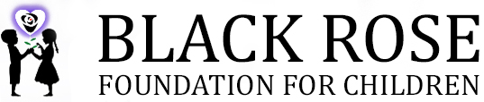

The Black Rose Foundation for Children, Inc. (BRFC) is a not-for-profit charitable organization founded in 2005 by Dr. Sheila Flemming-Hunter and her daughters Attorney Alero Afejuku and Dr. Ayo Afejuku. The vision of BRFC is to ensure that children, especially abandoned children have unlimited opportunities to excel in all walks of life. The mission is to provide resources to organizations seeking to empower children, through programs, services and advocacy.
We seek to provide experiences for children who are adversely affected by their environment, social and economic challenges and who have been abused, become parentless, and encumbered behavioral and emotional challenges. Our primary goal is to raise funds through support from individuals, philanthropists, organizations, and corporations who want to contribute to a successful life for children.
BRF is 501(c)(3) approved. We accept contributions from interested parties who want to support our mission. We also accept proposals and concept papers for funding from non-profit organizations that are compatible with our mission and goal. Programs and services in Memphis, TN, Atlanta, GA, and Jacksonville, FL are our current geographic focus areas for funding.
15 Years of Advocacy & Support for Children
- Received contributions and donations from more than three hundred individuals who invested in programs that supported our mission
- Capacity building services assisted two organizations to become 501c3 approved
- Founded the Memphis CARES Mentoring Movement
- Lead efforts to recruit thousands of mentors for children in Memphis
- Established the Annual Mentoring Awards Program in Memphis
- Raised thousands of dollars to support scholarships, mentoring, tutoring, and advocacy for children
- Established mentoring programs for foster children in Memphis and Atlanta
- Provided funding for CASA of Memphis and Shelby County, GrassRoots Community Foundation, Mentoring at Gospel for New Generation (G.A.N.G.), The First Tee of Memphis, National Council of Negro Women Jacksonville, 110 Institute (Man of the House Mentoring Program), Carrie Steele Pitts Home (Atlanta), and Kappitola, Inc. (Atlanta)
- Established three scholarship funds (Dr. Mary McLeod Bethune, James V. Brooks Memorial Scholarship and Moore-Myers Children’s Fund)
- Co-founded (with GrassRoots Community Foundation) “Let’s Move It!” Initiative for Healthy Children
- Partnerships Established with such organizations as National CARES Mentoring Movement, GrassRoots Community Foundation, Tennessee Parent Teachers Association, Healthy Memphis Common Table, Shelby County Juvenile Court, Memphis City Schools, Ujima Wellness Center (Memphis), U.S. Dream Academy, Atlanta CARES Mentoring Movement
- Affiliated with such organizations as Children’s Defense Fund; Department of Children and Family Services-Tennessee; Department of Family and Children Services-Georgia; Delta Sigma Theta Sorority-Shelby County Tennessee Chapter; Kappa Alpha Psi Fraternity-Memphis Chapter; South Memphis Alliance; National Center for Civil and Human Rights-Atlanta; Share and Seed-Jacksonville; Panama Youth Services-Jacksonville; and Family Services of North Florida
- Funded by such corporations as FedEx, Glaxo Smith Klein, Security Signals, Inc., Quad Tek, Inc., Viasys Technology, Farmers Insurance, United Way of the Mid-South, COSTCO, Godiva, and R. Wellington Financial Services